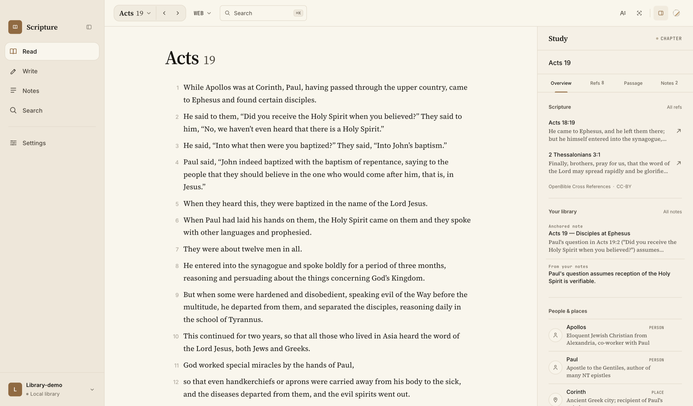
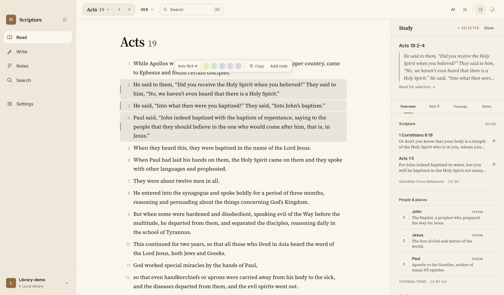
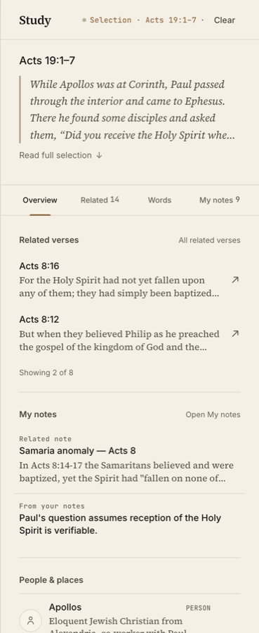
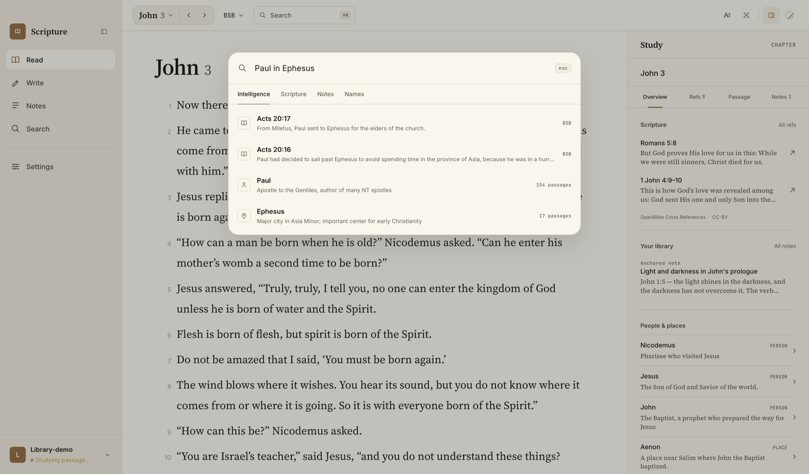
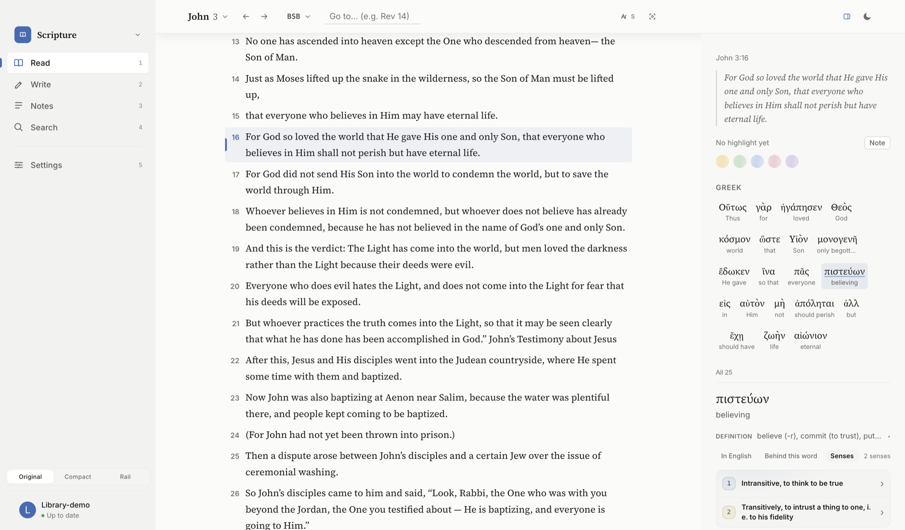
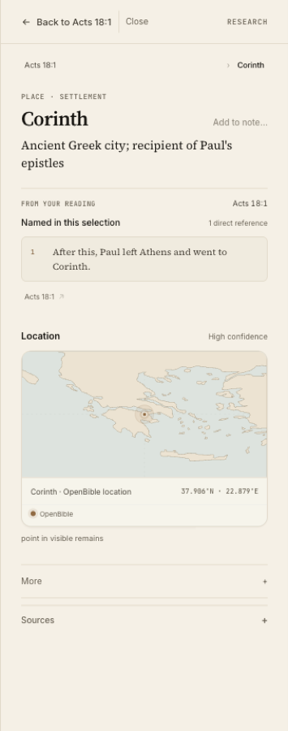
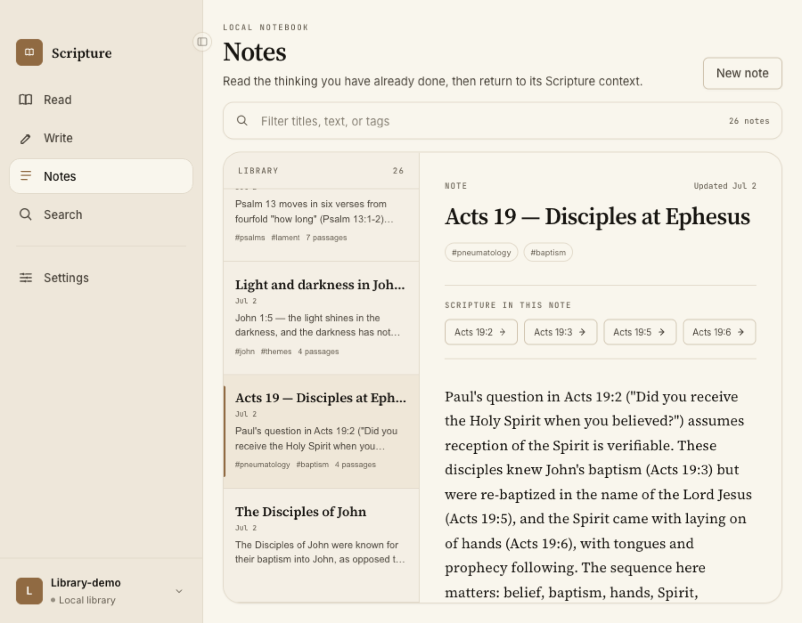

Pericope · by Shepherdly
Mark the word.
Keep what you find.
A scripture-native study environment for people who read slowly and mean it. Highlight, connect, and collect everything the text gives you — in a library that lives on your machine, not ours.


- Verses, exactly
- 31,102
- Cross-references
- 344,799
- People & places
- 4,259
- Your data, on your disk
- 100%
01 · Read
A canvas that
honors the text.
One column, generous measure, type set for hours not minutes. Select a phrase and wash it in color — exact, cross-verse, undo-able. Your marks are part of the library, not metadata on someone else's server.
- Precise phrase-level highlights in five muted washes
- WEB, KJV, YLT, and BSB — switch without losing your place
- Keyboard-first: chapter, verse, and margin without the mouse
02 · Study
The Living Margin.
It reads with you.
Wherever you are in the text, the margin is already there — related verses ranked from 344,799 cross-references, the Greek behind the word you touched, the people and places named, and your own notes resurfacing when they matter.
- Overview, Related, Words, and My notes — one tap apart
- STEPBible TIPNR entities with honest, sourced geography
- Shows nothing unless it has something worth showing

03 · Find
⌘K. Ask for anything.
Land exactly.
One palette for the whole library — Scripture, your notes, and 4,259 named people and places. Type “Paul in Ephesus” and arrive at Acts 20:17 with the margin already studying it.
- Intelligence, Scripture, Notes, and Names lenses
- Reference-shaped jumps — “john 3:16” just goes
- Fully keyboard-complete, from first keystroke to landing

04 · Go deeper
Everything a slow reader
actually reaches for.

The original languages, one word away
Touch any word for its Greek — glosses, senses, and usage, grounded in real lexicons.

People & places, honestly sourced
Corinth on a map with its coordinates, its record, and its provenance — never guessed.

Notes that are just files
Plain Markdown, anchored to verses, in a folder you can open in Finder.
⌘
Local-first, forever
Your library is a folder on your disk. Delete every index and it rebuilds itself — the source of truth is yours.
05 · Atmospheres
Four rooms for reading.
One library.
Paper for morning, Ink for night, Glass for focus, Candlelight for late. Same words, same marks — different light. Pick one to see it above.
06 · Convictions
Built like a library,
not a feed.
Nothing writes itself
No AI, plugin, or sync ever writes to your library on its own. Every change is your explicit act — reversible, and recorded.
Truth you can rebuild
Indexes, search, and embeddings are regenerable views. The durable things are Markdown files and open formats you can read in fifty years.
Honest about sources
Every map, record, and cross-reference carries its dataset and license. Uncertainty is shown, never smoothed over.
Be first to
mark the word.
Pericope is in early access for macOS. Leave your email and we'll save you a seat in the first reading room.
No newsletter. No drip campaign. One email when it's ready.